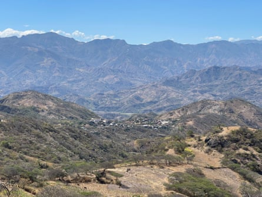
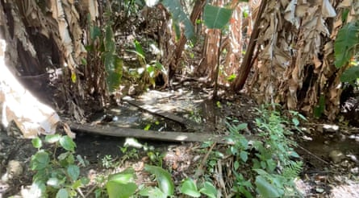
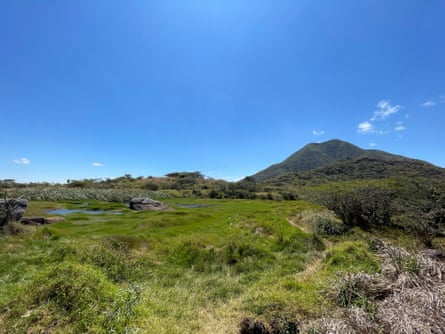
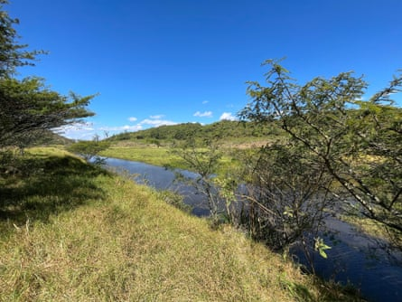
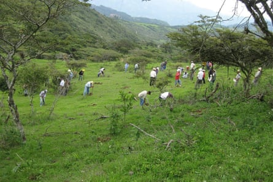
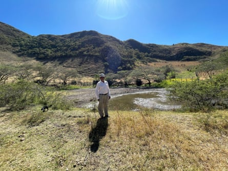

O ne day in 1983, while studying a hand-drawn map from 1792 of his home town in Ecuador , Galo Ramón, a historian, came across a dispute between a landowner and two local Indigenous communities, the Coyana and the Catacocha. The boundary conflict involved an ancient lagoon, depicted on the map.
“The drawing depicted a lagoon brimming with rainwater,” says Ramón. Ravines were depicted forming below the high-altitude lagoon, indicating that it supplied watersheds further down – contrary to the typical flow where a watershed feeds into the lagoon.
Ramón had discovered a long-forgotten ancient water management system conceived by the Paltas, a pre-Incan civilisation that inhabited the semi-arid region more than 1,000 years ago.
Galo Ramón, a historian from Catacocha in Ecuador’s Loja province, discovered a map from 1792 that led to the discovery of an ancestral water-collection system in the area.Photograph: Alejo Reinoso/The Guardian
Ramón set out to recreate the Paltas’ lagoon system and, 40 years on, the region has enjoyed an environmental regeneration, offering solutions for Ecuador – which regularly faces severe droughts – and other parts of the world struggling to address water scarcity with limited resources.
Galo Ramón was born in Catacocha, southern Ecuador , in 1952, a time when access to water for drinking and irrigation was unreliable. As a young man, he moved to Quito for university and to pursue his career as a historian. Eventually, he directed his research towards the history of the Paltas canton in Catacocha’s province of Loja.
“I was born in Paltas, where people have very little water. Although I don’t live there any more, I was eager to contribute with my knowledge,” he says.
When Ramón began his research in Catacocha, an urban area with a population of 8,000, people barely had half an hour of water a day. “People here live in constant insecurity about the chances of rain,” says Ramón.
The region has highly variable rainfall patterns due to its location at the convergence of two ocean currents – the Humboldt and South Equatorial. When the Humboldt current predominates , there is minimal rainfall, averaging about 300mm (12in) to 400mm a year. Approximately every seven years, when an El Niño occurs – warming sea surface temperatures – annual rainfall can rise to 4-5 metres.
San Vicente del Río in the Catacocha mountains, one of the main beneficiaries of the restored Paltas system.Photograph: Alexis Serrano Carmona/Mongabay
In years with consistent rainfall, most of it occurs in just one or two months, with about 70% falling in March and April . During this period, there are usually three to five intense tropical storms, when up to 850mm of rainfall can occur in the region – more than in many other parts of the country.
But as the region has very steep, rocky and irregular soil with poor permeability, water rapidly runs off and waterways tend to dry out. From May to December, the region experiences no rain, strong winds and intense sunlight, which cause soil erosion and reduce moisture in the soil. Still, the Paltas people not only managed to survive but thrive in this environment.
“So I began a historical investigation into the Paltas, including a series of Indigenous myths that still survive,” says Ramón, “as that, it seemed to me, could offer modern solutions to the problem of drought.”
Ramón indicates the lagoon he found on a map from 1792 drawn up as part of a land dispute between Indigenous communities and a Catacocha landowner.Photograph: Alejo Reinoso/Guardian
Ramón discovered that designs for the Pisaca lagoon were recorded in maps, wills, accounts of land disputes, property titles and interviews.
He realised the Paltas had developed a system for sowing and harvesting water that involved collecting and infiltrating rainwater, groundwater and underground runoff (sowing) to recover it later when it reappeared in springs and wells downstream (harvesting).
That system enabled the Paltas to regulate water flows and store water in aquifers for domestic use and irrigation during periods of drought. “The springs tend to increase significantly during the rainy months and then dry out by August due to poor soil permeability. Without the Paltas’ system, water runoff is rapid, so you don’t have a permanent source to feed the spring,” Ramón says.
The main element of this system is the artificial lentic – or still water – wetland ( cocha in Quechua) created at high altitudes to collect rainwater during the rainy months. The Paltas built these lagoons on fractured rocky terrain – the permeability of the pond bottoms allowed for slow water infiltration and aquifers to recharge.
An artificial lentic wetland, orcochain Quechua, created at a high altitude to collect rainwater.Photograph: Alexis Serrano Carmona/Mongabay
“Then they planted hydrophilic plants inside the lagoon, which developed roots that helped retain the water, slowing infiltration so that the lagoon could last all year,” says Ramón.
As hydrophilic plants cover the surface of the lagoon, they also prevent excessive water evaporation. The Paltas also observed zones where plants retained their leaves even in the driest months of the year due to higher levels of soil moisture. This made it possible to follow the direction of the subsurface flow in the shallow aquifer.
“The leaves are green because the aquifer is right below. So the Paltas observed that line of greenery in the dry months and were able to place the lagoons perfectly,” says Ramón.
The Paltas also built small dams along rivers to control runoff during the rainy season, which infiltrated downstream, creating a wet microsystem that maintained soil moisture. They also cared for headwater forests that captured moisture from the mist and planted vegetation on slopes to reduce erosion and surface runoff.
More than 50 species of trees, shrubs and groundcover plants emulating forest biodiversity enhanced the system, helping the Paltas retain water in their fields.
The Serpent lagoon, as it is known by the community, which was the first to be restored from the Paltas system.Photograph: Alexis Serrano Carmona/Mongabay
Ramón and his colleagues noted the remains of those systems during fieldwork and interviewed local people, collecting stories and traditions.
That was when Ramón deciphered the meaning of an Indigenous myth, that of “ touro Cango ” (Cango the bull), he had heard as a child.
“The myth said that the bull, which was responsible for bringing rain, lived in Catacocha while there were lakes, as he liked the grass that only grew in them. If there were no grass, he would not eat,” says Ramón. “This means that when the lakes disappeared, the bull disappeared too, along with the rain.”
The grasses that Cango the bull ate were hydrophilic plants essential to the wetland. “Little by little, the ancient water-management system described in myths, documents, petroglyphs and stone carvings was aligned as a coherent whole,” says Ramón.
T he Paltas’ system faded from memory during the early 18th-century Spanish colonial period due to a decline in the Indigenous population from diseases such as smallpox and measles, landowners expanding their properties and the Catholic church draining lakes linked to pre-Christian rituals.
The land was eventually given over to cattle and sugar cane. Even gardens were abandoned because of a lack of water, which increased food insecurity. Pisaca lagoon was the last to dry out, less than a century ago.
One of the restored lagoons in the Pisaca hills, which provides water for people and crops.Photograph: Alexis Serrano Carmona/Mongabay
As a result of the disappearance of the Paltas’ lagoon system, the Catacocha aquifers and springs became depleted, and water was available for only half an hour a day by 2001.
In 2005, Ramón, who by then was the leader of Comunidec, a human rights foundation , decided to rebuild the Paltas’ lagoon system.
Estefanía Maldonado, a constitutional rights lawyer who became involved with the foundation from the outset, says their goal at that stage was to empower peasant communities and civil society.
Vilma Collaguazo, 44, who lives in Catacocha, began attending project meetings and workshops early on. She remembers that when she first heard of the plan, she didn’t believe it would work. “We had no idea how the lagoons were going to fill up, given that they were so big,” she says.
Comunidec secured resources, and the project began with the restoration of the lagoon on the eastern slopes of Pisaca mountain between 2005 and 2008. It is now the largest, with a storage capacity of 78,420 cubic metres.
The local community working to reforest the Pisaca reserve.Photograph: José Romero
“By the end of 2005, there were some hefty rains and the lagoons were filled,” Collaguazo recalls.
“Since then, there was water almost year-round in the springs, and even new springs emerged. People had water to drink and for their crops, so we began to believe again.”
In 2010, the Nature and Culture International Foundation and bought 406 hectares (1,000 acres) of land around Pisaca, supported by Comunidec, to create a reserve, remove cattle and use the land to maintain the water system permanently.
By 2013, 28 lagoons had been built, as well as other elements of the water management system, such as tajamares (small dams or weirs) and water reservoirs, that had been part of the landscape more than 1,000 years ago.
Since then, local people have reforested the area with native plants that reduce water evaporation, conserve moisture and protect the slopes. The project has increased Catacocha’s water availability from one to 10 hours daily and enhanced food security through community gardens, resulting in the creation of 250 lagoons and tajamares.
Antonio Díaz, who has been involved with the project since 2005, has reaped the benefits. “I live not far from the Pisaca lagoon and have plenty of water for my little garden and my animals,” he says. “It is truly a good thing.”
Antonio Díaz by the lagoon he uses to irrigate crops.Photograph: A Serrano Carmona/Mongabay
Despite its success in reducing water scarcity and food insecurity, successive governments in Ecuador have not been persuaded to invest in rebuilding the systems.
“Perhaps politicians don’t see that it is an investment that will yield immediate returns,” Ramón says. “This year it rained little, so the hydroelectric plants lack water. When it rains, there is no runoff management. Ancient techniques allow you to do just that and could be a solution for all of Ecuador.”
Maldonado believes that Catacocha demonstrates how water scarcity can be addressed with positive environmental outcomes and without significant investment.
“Water is a constitutional right for all. Yet, how do you provide it to a rural community that may be in debt and lack the cashflow to carry out projects?” she asks.
“We don’t necessarily need monumental projects to have water. We can also do it by recovering ancestral knowledge.”